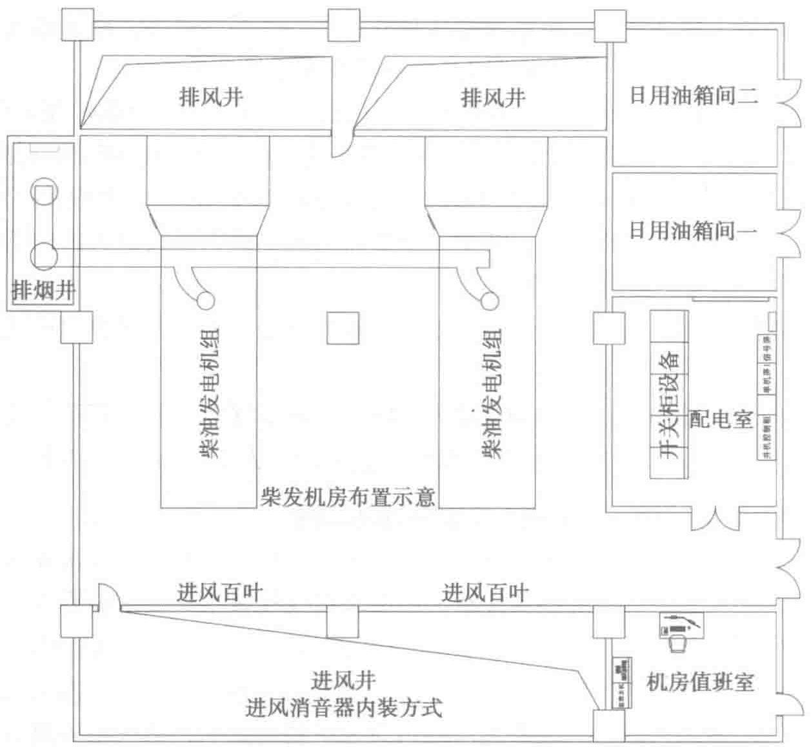
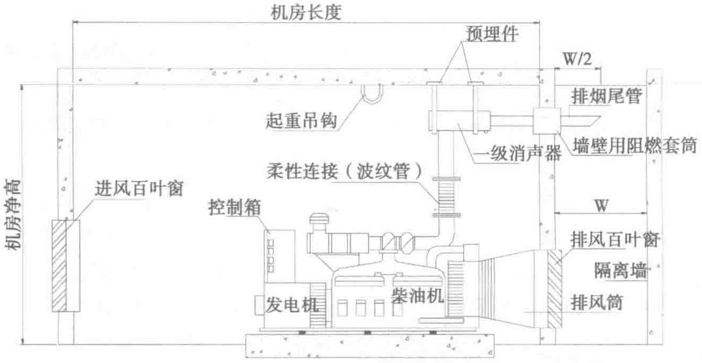

集场所、电网线路、火源场所，同时考虑地质条件、土壤腐蚀性以及地下水等因素。有条件的情况下宜设置在上风侧，不宜设置在低洼地段。应配套设置消防设施、防排水排气设施、安防设施等。


（2）埋地油罐的基础承载能力应满足燃油和罐体、基础重量及其他附件重量，需要的承载能力应根据计算确定，应事先了解属地的规定要求以及建筑物地质勘查报告。
PDF第172页 · 已逐页校对
集场所、电网线路、火源场所，同时考虑地质条件、土壤腐蚀性以及地下水等因素。有条件的情况下宜设置在上风侧，不宜设置在低洼地段。应配套设置消防设施、防排水排气设施、安防设施等。


（2）埋地油罐的基础承载能力应满足燃油和罐体、基础重量及其他附件重量，需要的承载能力应根据计算确定，应事先了解属地的规定要求以及建筑物地质勘查报告。